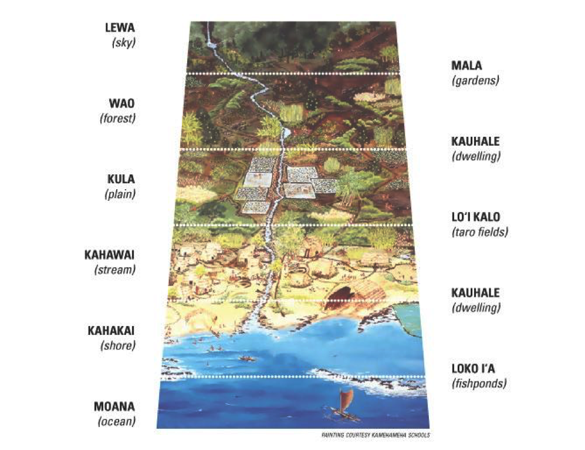
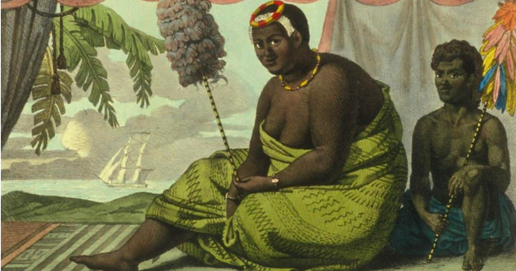
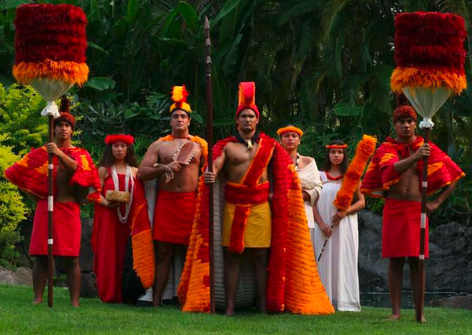

Greeting Word: Aloha
Current Population: 1.3 million
Location: Hawai’i, at the northern apex of the Polynesian Triangle and the only major part of Polynesia above the equator, is located approximately 2,500 miles [4,000 km] west south west of the US Mainland.
Size: Eight major islands (seven inhabited) and over 100 smaller ones cover approximately 6,400 square miles (16,600 km²).
Factoid: Some modern Hawaiians are striving to re-establish a recognized form of sovereignty, perhaps similar to Native American Nations in other parts of the U.S.
The Hawaiian greeting of ALOHA is probably the most well known Polynesian word. Of the more than twenty islands in the Hawaiian group, only seven are inhabited. Hawaii spreads over a distance of about 400 miles. The eight main islands (seven of which are inhabited) are volcanic islands while the others are small coral islands. Together, they comprise about 6,424 square miles of land. The population of approximately 1.3million (80% of which live on Oahu) is composed of a mixture of Polynesians, Asians, and Caucasians.
Hawaii has a mild, tropical climate with seasonal temperature fluctuations of only about 10 degrees. The islands are exposed to yearly Northeast trade winds. More rain falls on the island of Kauai than on any other spot on earth. The first Hawaiians migrated from the Marquesas Islands approximately 30-40 generations ago settling first on Kauai and Oahu. A late migration from Tahiti settled on Hawaii and Maui. Many have tried to discover when the migrations took place, but no one knows the exact date. Communication between Hawaii and Tahiti remained active.
After an initial discovery by the Spaniard Gaetano, the Hawaiian Islands were rediscovered by Captain James Cook in 1778. Captain Cook named the discovery the “Sandwich Islands” after his patron, the Earl of Sandwich. King Kamehameha I united the islands into an independent kingdom in 1796. This period of royal rule stretched until 1893 when Queen Liliuokalani’s monarchy was overthrown and Hawaii was annexed by the United States of America in 1898. Later, in 1959, the Hawaiian Islands were officially named the "Aloha State" when they officially joined the U.S. as its fiftieth state. Since gaining statehood, Hawaii’s economy has evolved from one dependent on sugarcane and pineapple crops to a profitable economy based on tourism. It is Hawaii’s largest source of revenue.
The official State bird is the Nene, or Hawaiian Goose, which is native to Hawaii and protected as an endangered species. Prior to 1778 (when Capt. James Cook arrived) there were about 25,000 Nene. By the mid 1900's, wild Nene numbered less than 30. Breeding programs at Slimbridge in England and Pohakuloa, Hawaii have helped bring the current population in Hawaii up to about 3,000 birds.
Samoans are raised in villages, or nu'u, such as this one at the Polynesian Cultural Center. The courtyard found in each village is called the malae and accommodates the traditional festivities and ceremonies of the village. Each of the structures in a Samoan village serves a special purpose.
The State Tree of Hawaii is the Candlenut or kukui, whose nut is rich with natural oils. The nuts of this tree provided the ancient Hawaiians with light, oil, relishes, and medicine. The kernels are strung together with coconut mid-ribs and lit to be used as candles. Each kernel has enough oil in it to burn for approximately eight minutes. Because of it’s rich content, it was also used as a laxative. The oil was also used to partially waterproof canoes and small water craft.
BASIC INFORMATION ABOUT THE VILLAGE
This village is patterned after a typical Hawaiian family compound from around 1750 A.D. Each family had a single-room hut which was used mostly for sleeping. In ancient Hawaii, each household consisted of a number of separate, but associated huts that together comprised what was called the ‘kauhale’ (dwellings). Thus, each household could have several houses in one area, as well as a different cluster in another area, and the ‘kauhale’ were frequently separated by some distance.
Further, there were specific functions assigned to various houses in each cluster, with certain dwellings designated as sleeping huts, others for eating (men ate separately from the women and children, for their eating hut was regarded as a religiously significant place in which food offerings were made to the gods and ancestors), and cooking huts that consisted of stone walled areas with thatched roofs for food preparation. There were other huts within the kauhale that were task specific as well, such as those for canoe makers and others used to house fishing gear. These buildings belonged to the entire village, and not to one particular family.
Hawaiian structures are covered with pili grass, which is found on higher altitudes. The grass is bundled and layered on the cross beams and frames of the buildings. Pili grass contains a natural waxy substance that causes it to stick together when wet. This provides an ideal waterproof covering for the buildings. This 'sticking together' is called pili in Hawaiian. When the leaves dry out, they separate again, allowing for air circulation within the buildings.
The inside of the buildings are lined with lauhala, or pandanas leaves. This leaf is very universal in Polynesia and is used by the islands people for weaving. Enclosed buildings typically did not have windows or additional doors, and normally the doors were low and one had to bend down or crawl to enter, however, for our guests’ convenience and ease of access, you will find normal doors and windows on the structures here.
AHUPUA’A:
The concept of private property was unknown to ancient Hawaiians, but they did follow a complex system of land division. All land was controlled ultimately by the highest chief or king who held it in trust for the whole population. A whole island, or mokupuni, was divided in smaller parts, down to a basic unit belonging to a single family.
Each mokupuni was divided into several moku, the largest units within each island, usually wedge- shaped and running from the mountain crest to shore. O`ahu was divided into six moku.
Each moku was divided into ahupua`a, narrower wedge-shaped land sections that again ran from the mountains to the sea. The size of the ahupua`a depended on the resources of the area with poorer agricultural regions split into larger ahupua`a to compensate for the relative lack of natural abundance. Each ahupua`a was ruled by an ali`i or local chief and administered by a konohiki.
Each ahupua`a contained the resources the human community needed, from fish and salt, to fertile land for farming taro or sweet potato, to koa and other trees growing in upslope areas. Villagers from the coast traded fish for other foods or for wood to build canoes and houses. Specialized knowledge and resources peculiar to a small area were also shared among ahupua`a.
Although there was no private ownership of property, land tenure of the maka`ainana (commoners) was stable. They paid weekly labor taxes and annual taxes to the konohiki, or local overseer, who collected goods to support the chief and his court. The konohiki supervised communal labor within the ahupua`a and also regulated land, water and ocean use.
Stewardship of the land and its resources was formalized through the kapu system. The kapu (taboo) - administered and enforced by konohiki and kahuna, or priests - placed restrictions on fishing certain species during specific seasons, on gathering and replacing certain plants, and on many aspects of social interaction as well. In this way, the community maintained a sustainable lifestyle. Through sharing resources and constantly working within the rhythms of their natural environment, Hawaiians enjoyed abundance and a quality lifestyle with leisure time for recreation during the harvest season of the year. This lifestyle also encouraged a high level of artistic achievement. Many crafts, including Hawaiian kapa and featherwork, were the finest in the Pacific. Hawaiians devoted themselves to competitive sport and martial arts as well as expression through dance and chant, creating rich traditions that continue today.
HALAU HO’IKE:
Presentation House
A halau was a very important house in Hawaii. Within buildings like this, much of the culture, history and heritage passed from one generation to the next. Knowledge was passed orally through stories, chants and dances in special buildings such as this. It is a place of learning and growth.
HALE MUA: Men’s Eating House
Men’s Eating House

In ancient Hawaii their religious beliefs and practices did not permit the family the opportunity to eat together. This building, the Hale Mua, was used by the men for eating, training young men, and other religious activities. The women of the family had their own eating-house called Hale ‘Aina. All children would eat with their mother in the women’s eating-house until the young boy turned 8, 9 or 10. The age varied in different areas. At that time he would move into the Hale Mua and learn the ways of men. This type of societal rule called kapu, also prevented women from eating certain foods like bananas, coconuts and specific types of fish. It was followed until the year after Kamehameha’s death, when Liholiho (Kamehameha II) ate together with his mother, Ka’ahumanu, abolishing the kapu.
The ipu is a gourd that grows like a pumpkin or a squash. The shell was used as a bowl or container. The la’amia is another gourd, but this one grows on a tree. This gourd too is dried, hallowed and used as a bowl. La'i or ti leaves are used like tin foil wrapping when doing barbques. They store the cooked food in the leaf or wrap the raw foods in the leaf and cook it. Various woods were used as bowls and trays as you can see.
In the corner of the building there are ki'i or god images honored by the Hawaiian people. In relationship to the gods, if the family had a problem that they could not solve the patriarch of the family would sleep in this building and with the help from the gods, the solution to the problem would be revealed in a dream.
HALE NOHO or HALE NOA:
Family Dwelling
Of all the buildings used by the Hawaiian family, the hale noho had the least restrictions. In this building the family could meet and share thoughts. The building was also used by the family as a sleeping house. Because they lived with extended family and everyone slept together, there were assigned area for sleeping. Children slept on the outer ends of the hales, and adult males slept closest to the doors to protect their families in case of attack.
Beds were very simple. Pili grass and dried leaves were spread on the pebbled or sandy floors for cushioning. Mats were often placed over the grass to serve as beds. During the day, they were put out in the sun to cleanse and refresh them, then brought back in for use during the night.
HALE HANA:
Work House or Workshop
The Hale Hana could be used for many different purposes. Hana means ‘to work’, so this is a workshop used to make or do many different things, depending on what was needed for the village.
HALE ULANA: Weaving Hut
Weaving is done primarily with lauhala or Pandanas leaves. The pandanus tree has a fruit that resembles, and is sometimes mistaken by visitors, for pineapple. The fruit on the tree is called puhala, and when it ripens turns a bright red, yellow or orange depending on the variety of the tree. It is often used for making leis. The fruit is made up of smaller sections that when united makes the ball you see on the tree. These sections in ancient times, when ripe, were chewed on by the Hawaiian children and used as a type of candy. One can also take these dried sections and peel them open for meat on the inside that are like pine nuts. The skin is so tough, that adults used this only during times of famine when there was nothing else available.
The leaves are picked and dried. Then the thorns down the sides and back are removed, the leaf is cleaned, flattened, and stored in rolls called poka’a. When they need to weave they strip the leaves to the appropriate size and commence making the items desired.
HALE ALI’I: Chief’s Council House
The Hale Ali'i represents the house of the ali’i or chief. It was built on the most prominent rise in the area and was often further elevated by a stone platform. Besides establishing the owner’s elevated social status, this architectural style also protected the house from floods. The exterior thatching is of pili grass, which was sometimes then covered with large fishing nets to keep the grass from curling and looking untidy. The roof in the interior was usually thatched with pandanus leaves, and mats covered the floor. The Hale Ali’i was primarily a place for the chief to sleep, rest or confer with other leaders. In ancient times the Hale Ali’i was forbidden to women and children.
All the items in this building are items related to the rule of the Chief. In ancient time feathers were like diamonds to the Hawaiians. They were set aside and used to adorn people of nobility. Symbolic of the chief’s prestige, the Hale Ali’i often had kahili displayed on the outside or the inside. These kahili, or royal insignia, were made of feathers owned only by the Ali’i and are comparable to flags or banners carried for the royal courts in Europe. The kahili always preceded the Ali’i to alert the people to bow low as he approached as a token of respect. Similarly, the priests, or kahuna, would often precede the Ali’i carrying the taboo staff, called pulo’ulo’u (a stick covered with a ball of white tapa material at the top), which was intended to ward off evil spirits. This was used like a no trespassing sign. If the chief wanted an area to remain private for his use, one would see this staff pegged in the area. If the chief was in residence and did not want to be disturbed, you would see one outside the door.
The Ali’i, or High Chief, wore an ahu’ula or feathered cape. Many feathers they used were around the size of a fingernail, so it took thousands of feathers for the making of these capes. There are two distinguishing facts about these capes, the first being it’s size. The longer the cape, the higher the rank of that chief. Also, the yellow or gold feathers of the birds were the most rare, so the more gold or yellow on the cape, the higher the rank of that particular chief.
The lei niho pala’oa was worn by both men and women and was crafted from braided human hair and highlighted with a pendant carved from a whale's tooth in the shape of a curving tongue.
The feathered crown or helmet is called the mahi’ole. There are two stories as to the shape of the helmet; one speaks of the rainbow – a sign from the heaven. The other tells the story about the crest of the rooster – a sign of authority. The helmet is made from the rootlets of the vine known as the ‘ie’ie which works like rattan or wicker. After the frame is completed feathers may be added to it.
Other items used by the mo’i wahine, or lady in waiting, included the crown, or lei hulu, made from feathers bound into a circlet for the hair or the neck, and finely woven lauhala fans and delicate feather kahili with decorated handles.
HALE LAWAI’A:
Fisherman’s Store House
This building was used by the fishermen to store items such as fish net, crab nets, weights, cordage, and bamboo needed for making nets and other such items used by fishermen.
HALE NO’EAU:
House of Games of Skill
This is another house of learning and holds games used by Hawaiians to develop physical and mental skills needed for daily life.
- HU: Hawaiian Spinning Tops
The kukui kernel is used for the making of tops such as these. This objective is to keep as many tops spinning at the same time as possible.
- KONANE: Hawaiian Checkers
In Hawaiian checkers every time you move you must jump over your opponent. The board is a set up alternating dark and white pebbles. To start the game place a pebble in each hand, place your hands behind your back and rotate the pebbles until satisfied. Bring hands to the front and your opponent selects a hand. The white pebble jumps first so with the 4 spaces available in the middle of the board the game starts rotating turns always jumping over and opponents pebble. One can double or triple jump but only in the same direction. There are no diagonal moves, one can only move up and down or from across.
- ULUMAIKA: Lawn bowling
The original disks were made from stone. The objective is to roll the disks through the two pegs at the end of the lane.
- PALA’IE: Loop and Ball
Made from various parts of the coconut tree, this game starts with the ball in the loop. The objective is to swing the ball towards you, hit it underneath of the loop swing it back towards you and catch the ball in the loop. That is the basic, and from there one learns more tricks and also learns with both hands.
HULA:
Hula today is commonly divided into two broad categories. Ancient hula, as performed before Western encounters with Hawaii, is called kahiko. It is accompanied by chant and traditional instruments. Hula as it evolved under Western influence, in the 19th and 20th centuries, is called ‘auana. It is accompanied by song and Western-influenced musical instruments such as the guitar, the ukulele, and the double bass.
Hula is taught in schools called hālau. The teacher of hula is the kumu hula, where kumu means source of knowledge. Hula dancing is a complex art form, and there are many hand motions used to signify aspects of nature. The hand motions in hula are the focus, and different motions have different meanings. They tell the story of the accompanying mele, or chant, and are meant to help convey the feelings and emotions of the performers.
- Hula kahiko encompassed an enormous variety of styles and moods, from the solemn and sacred to
the frivolous. Many hula were created to praise the chiefs and performed in their honor, or in honor of
the gods.
This type of hula was considered a religious performance, rather than entertainment, which is why you will notice that the dancers do not smile while they perform. As was true of ceremonies at the he’iau (temple), even a minor error was considered to invalidate the performance. It might even be a presage of bad luck or have dire consequences. Dancers who were learning to do such hula necessarily made many mistakes. Hence they were ritually secluded and put under the protection of the goddess Laka during the learning period. Ceremonies marked the successful learning of the hula and the emergence from seclusion.
Hula kahiko is performed today by dancing to the historical chants. They are accompanied by chanting and the beating of the ipu heke, or gourd drum and performed with a reverence for their spiritual roots.
Hawaiian history was oral history. It was codified in genealogies and chants, which were memorized strictly as passed down. In the absence of a written language, this was the only available method of ensuring accuracy. Chants told the stories of creation, mythology, royalty, and other significant even ts and people.
- Hula ‘auana, or modern-style hula, arose from adaptation of traditional hula ideas (dance and mele)
to Western influences. The primary influences were Christian morality and melodic harmony. Hula
‘auana still tells or comments on a story, but the stories may include events since the 1800s and are
more of an entertaining nature. The music is heavily Western-influenced, and usually includes the
accompaniment of less traditional instruments, like the guitar, steel guitar and ukulele.
There are two songs that are sung as guests learn the hula ‘auana in the Hawaiian village:
I Don’t Like Shoes
I don’t like shoes upon my feet
To be at ease is such a treat and
I smile at everyone I meet;
That’s the Hawaiian in me.Along the Beach
Along the beach at Waikiki
A fair wahine is waiting for me,
With nice eyes and lovable charms
And a sweet Hawaiian hospitality.
LO’I KALO:
Taro patch or pond
Lo‘i kalo are ponds for wetland kalo that are enclosed by banks of earth. They are constructed near kahawai (streams) because they are irrigated with stream water. The Hawaiians used a system that allowed water from the stream to run through an ‘auwai(ditch) into the uppermost lo‘i kalo and flow through the openings in the terraces to each lower lo‘i kalo. The water is eventually discharged back into the stream. Many steps went into making a lo‘i kalo.
LOKO I’A:
Fish Pond
Ancient Hawaiians had the most advanced fish husbandry system of the different island-nations of the Pacific. They built fishponds along the shores and water inlets. They created rock walls that allowed seawater to ebb and flow into the ponds. Gates built into the wall, would help circulate the water, and also allow small fish into the pond. Once the fish were in, they would eat the algae and other foods provided by the villagers. As they became larger, the fish would no longer be able to leave the pond through the gates, becoming trapped inside. In this way, Hawaiians were always able to maintain a readily available fish supply, which is important, since fish was their main form of protein.
POLYNESIAN MIGRATIONS
The Pacific Ocean is the largest ocean in the world. It covers approximately one third of the surface area of the entire globe. If we were to put all the world’s continents into it there would still be enough room to fit another continent the size of Asia in.
Within the Pacific there are basically three groups of island people that live there—the Polynesians, the Micronesians, and the Melanesians. When the Europeans came into the Pacific they selected the names of these areas based on some aspect of that particular place.
Micro means “small” and nesia, comes from the Greek word meaning “islands” so Micronesia means “small or tiny islands.” Most of the islands in this group are tiny coral atolls where the highest point above sea level is about 15 feet. They can be very small measuring about 2 miles wide by 3 miles long. The people that live here are believed to have come from the Philippines about 11,000 years ago. The “mela” in Melanesia means black or dark—so these are sometimes called the “dark (or black) islands.” The people that live here are darker in skin color than the other Pacific island people. The Melanesians are believed to have migrated here about 20,000 years ago from either Australia (the aborigines) or came across land bridges from Africa when the water levels were much lower. “Poly” in Polynesia means “many” – in other words this area was known as “many islands.” There are over 25,000 islands in this area. The people of Polynesia are believed to have arrived in this area between 2000 to 3000 years ago.
If you extend an imaginary line from Hawaii in the north to New Zealand in the south and then over to Easter Island and then back up to Hawaii you will see what we call the Polynesian Triangle. Most of the islands, which are inhabited by the Polynesians, are found within this imaginary triangle. It covers an area of about 16 million square miles—most of that water. You see Fiji is on the border between Melanesia and Polynesia. Though the Melanesians originally settled Fiji, when the Polynesians moved in they took over large parts of Fiji and had a profound influence on the culture. Fijians adopted many aspects of Polynesian culture and today consider itself part of Polynesia.
Where the Polynesians came from is somewhat of a controversial question. Most anthropologists will tell you that they came from Southeast Asia and there is evidence to support this theory. For example, many of the staple foods eaten throughout Polynesia including the taro, tapioca, breadfruit, and banana come from that part of the world. The domesticated animals they brought—the pigs, chickens, and dogs – are also from the Southeast Asia area.
There is also a type of pottery called lapita pottery, which was made in Indonesia and found throughout Melanesia including Fiji, and remnants in Samoa show that people traveled in an easterly direction bringing this skill with them.
Another theory, which is not as popular with the anthropologists, is that Polynesians came from the Americas. This was a theory that was put forth by Thor Heyerdahl, a Norwegian explorer. He built a balsa raft (a small example of this type of raft is hanging in the rafters of the Migrations Hut at the Hoku Pa’a Landing) in Peru and set sail to see if it was possible to make it to Polynesia—which he did. Many Polynesians support this theory because their oral history (in the form of chants) tells them that they came from the east.
There is also evidence to show people could have come from this direction also. Throughout Polynesia you will find the sweet potato, which originates in South America. In the highlands of Peru, there is a group of Indians called the Quetchua Indians and in their language they call the sweet potato kumara. Throughout Polynesia it is called the same thing. For example in New Zealand the Maori call it Kumara. They also call it by the same name in the Cook Islands, Marquesas, and on Easter Island. In other islands they use a variation—in Tonga, kumara, in Samoa, umala and Hawaii Uala. In New Zealand the Maori have another type of potato, which they call peruperu because as one grandmother said, “our people came from Peru.” The papaya is also believed to come from South America and the cotton found throughout Polynesia is an American breed of cotton.
Besides food, Polynesian carvings reflect their American heritage. The Maori have a character called Tiki, which is found throughout the Americas also. In fact if you compare a Maori tiki to one found in Peru or Mexico, you would have a hard time distinguishing them. In fact in Mexico they are called heitiki. In the Tuamotu Islands they built stone walls without mortar where the stones are fitted so close together it is difficult to force a knife blade in between. This is the type of construction that the Maya, Inca, and Aztec Indians (of the Americas) were famous for.
Another fact is that the blood type of Polynesians is predominately “O” positive and the Indians of America as well but the predominate blood type of Southeast Asia is “A” and “B”. There has been some study of DNA, which has found that there are three genetic markers within Polynesia showing that Polynesians had their origins in more than one gene pool. They have markers in common with some American Indian tribes and with Asia.
You can see why the question of where Polynesians come from is shrouded in controversy. There are some people that believe that people could have migrated from both areas, Southeast Asia and the Americas and then blended into what we call Polynesians today. We will let you come to your own conclusions on what you think the answer to this question is. Regardless of where they came from, Polynesians were very sophisticated explorers. They traveled on large catamaran-style voyaging canoes—some 150 – 200 feet long and 35 feet wide. They were capable of carrying large numbers of people and were very fast. They could travel about 160 miles per day. Captain Cook recorded in his journal that when he was traveling from Tahiti up to the Hawaiian Islands that one of these canoes passed him also headed for Hawaii. This canoe reached Hawaii and then passed Cook on its way back to Tahiti before Cook even made it to Hawaii. Cook’s ship would take about 60 days to reach Hawaii while the Polynesian vessel only took 20 to 35 days.
The Polynesian navigator started training when he was a child. He had to know where all the stars in the sky were in any given season. They would use these stars for navigation. Certain stars marked certain islands. For example, when a canoe wanted to travel, say from the Big Island of Hawaii to Tahiti, they would leave either at dawn or at sunset when the star would be found right above the horizon. There would be a landmark on the Big Island that the navigator would line up with the star that marked Tahiti and then they would set sail. The course would then be marked every day by checking the stars positioning. Another thing that they would do would be to make sure that the ocean swell hit the canoe at the same angle throughout the trip. The Pacific Ocean’s swell pattern is consistent in that it always runs in the same direction even in bad weather. So as they would set sail following the star they would check the angle of the swell against the canoe and then keep it that way. This way even in poor weather when they couldn’t see the star they could rely on the action of the side of their canoe. As they would near land, even before they could see it, they would run into a reflected swell pattern.
In other words, the swell would start coming from a different direction because the landmass would cause the swell to break around it. This would indicate to the Polynesian explorers that land was near and they could follow the reflected wave into land.
There were also other indications of land, which the Polynesians would look for. For example if they saw land-based birds out fishing during the day they knew that these birds only travel about 40 miles away from where they nested. They could wait for nightfall and follow these birds home to land. Clouds were also used. Cumulus clouds only form above land and extend up for thousands of feet so they were easily seen above the horizon. If the navigator saw this type of cloud, he knew there was land underneath. Also any type of cloud will reflect color something like a mirror. So if the navigator saw a cloud that reflected a green or grayish color underneath, chances there was land under that cloud. Even if he saw one that reflected red, chances were that it was land with some volcanic activity. These are only a few of things that the Polynesian navigator used and looked for as he traveled across the ocean.
Here in Hawaii we have three voyaging canoes that take trips periodically to train new navigators so these traditional skills won’t be lost. A few years ago when they were making a trip from Hawaii to Tahiti on the largest and most famous of these vessels called Hokule’a, the canoe had a link to the space shuttle. The people on the shuttle asked out of curiosity what the voyagers on the canoe thought their position was. They were very surprised to find that with using only traditional means of navigating that the people on the canoe were only 10 miles off from what the very sophisticated computer equipment on the shuttle had come up with.
Terms:
Ahupua‘a – Traditional Hawaiian land division stretching from the mountains (mauka) to the sea (makai), designed to provide resources for the entire community.
Ali‘i – Hawaiian noble or high chief who governed districts and enforced kapu (laws).
Aloha – Hawaiian greeting meaning love, affection, peace, and compassion; used for hello, goodbye, and expressing goodwill.
‘Ike – Knowledge or understanding; often refers to traditional or spiritual Hawaiian wisdom.
‘Ili – Smaller land division within an ahupua‘a, managed by families for farming and living.
‘Iosepa – Double-hulled voyaging canoe (wa‘a kaulua) built to preserve ancient Polynesian navigation and sailing traditions.
Hale – General term for “house” or “building” in Hawaiian.
Hale Kuke – Cooking house; separate structure used to prepare food and prevent fires in the living areas.
Hale Mua – Men’s house where males ate, met, and discussed family and political matters.
Hale Noho – Family dwelling house used for sleeping and daily living activities.
Hale Papa‘a – Storage house where food, tools, and valuables were kept safe and dry.
Hale Pe‘a – Women’s house; private space for women during menstruation or childbirth.
Heiau – Sacred temple or place of worship dedicated to various Hawaiian gods or spiritual practices.
Hōkūle‘a – Modern Hawaiian voyaging canoe that revived traditional Polynesian navigation; symbolizes cultural pride and unity.
Hōlua – Ancient Hawaiian sledding sport performed on stone or grass slopes using specially made sleds.
Hula – Traditional Hawaiian dance accompanied by chant or song, telling stories through movement and expression.
Hula Kahiko – Ancient style of hula performed with traditional chants and percussion instruments.
Kalo – Taro plant; staple Hawaiian crop used to make poi and symbolizing family genealogy (the ancestor Hāloa).
Kamehameha I – The first king who united all Hawaiian Islands into one kingdom in 1796.
Kapu – Sacred system of laws and taboos that governed religion, social behavior, and order in traditional Hawaiian society.
Kauhale – Traditional Hawaiian household compound made up of multiple hale (houses) serving different purposes.
Kukui – Candlenut tree; Hawai‘i’s state tree, valued for its oil, light, medicine, and ceremonial uses.
Lei – Garland or wreath made of flowers, leaves, shells, or nuts; symbol of affection, welcome, and respect.
Lili‘uokalani – The last reigning monarch of the Hawaiian Kingdom, overthrown in 1893.
Makai – Direction meaning “toward the sea.”
Mauka – Direction meaning “toward the mountains.”
Mo‘olelo – Story, legend, or historical account passed down through Hawaiian oral tradition.
Nēnē – Hawaiian goose; state bird of Hawai‘i, once nearly extinct but now protected.
‘Ohana – Family or extended family network; central concept representing love, cooperation, and shared responsibility.
Poi – Staple Hawaiian food made from pounded kalo (taro) root mixed with water.
Wa‘a – Canoe; essential vessel for fishing, travel, and voyaging between islands.
Wa‘a Kaulua – Double-hulled voyaging canoe used for long-distance exploration and ocean navigation.